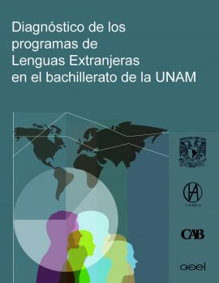

Reseña
El diagnóstico de los programas de Lenguas Extranjeras en el bachillerato de la UNAM, tiene como propósito llevar a cabo un análisis minucioso de los programas de lenguas extranjeras en el nivel de bachillerato de la Universidad Nacional Autónoma de México (UNAM). Lo que lo hace particularmente valioso es que este análisis se realizó desde la perspectiva de tres actores fundamentales: los estudiantes, los docentes y los responsables de los departamentos de lenguas del CCH y de la ENP.
El desarrollo del proyecto se dividió en tres etapas, las cuales constituyen los principales componentes de este diagnóstico:
- Análisis de los modelos educativos del bachillerato y su relación con los programas de lenguas extranjeras.
- Revisión de los programas de asignaturas utilizando indicadores específicos.
- Creación y aplicación de herramientas cuantitativas y cualitativas para evaluar los programas de estudio de lenguas extranjeras desde la perspectiva de los estudiantes, profesores y jefes de departamento.
En cada una de estas etapas, se lograron identificar las fortalezas de los programas existentes, así como las áreas en las que se podía mejorar. La colaboración entre el Consejo Académico del Área de las Humanidades y de las Artes (CAAHyA) y la Comisión Especial de Lenguas (COEL), en conjunto con el Consejo Académico del Bachillerato (CAB), generó resultados valiosos que, se espera, ayuden a los responsables de estas entidades a comprender las perspectivas de los diversos actores involucrados y a tomar decisiones que conduzcan a una formación de calidad para los estudiantes de bachillerato en la UNAM.